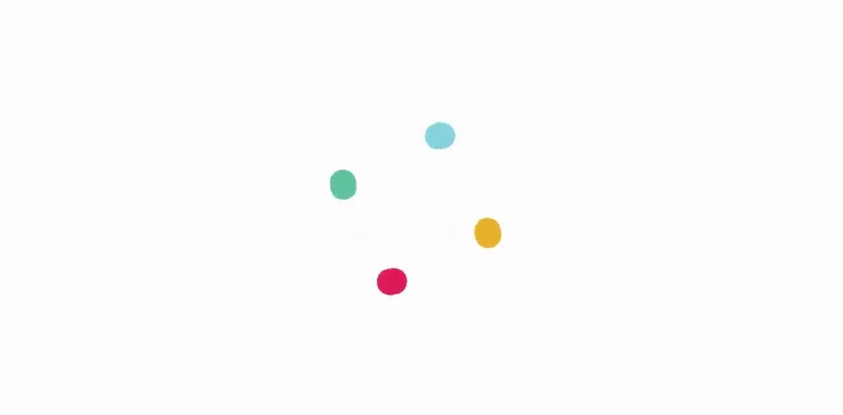
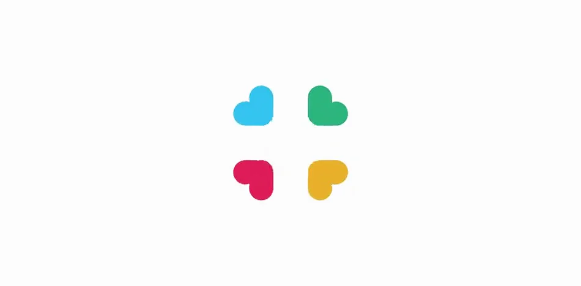
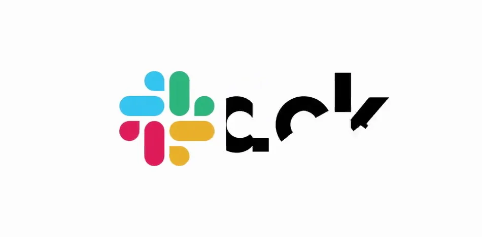

Slack / V367
标志聚合揭晓 · 8.0 秒
把旧图形拆成最小单元，再用同一组颜色重新组装标志与名称。
构图与编排 可播放 · 可替换内容
整体编排规则示例
查看 HTML 源码
<!doctype html><html lang="zh-CN"><meta charset="utf-8"><meta name="viewport" content="width=device-width,initial-scale=1"><title>标志聚合揭晓 · 8.0 秒 · sequence</title><style>html,body{margin:0;width:100%;height:100%;overflow:hidden;background:#fafafa}canvas{display:block;width:100%;height:100%;object-fit:contain}</style><body data-mode="sequence"><canvas width="1000" height="600"></canvas><script src="data.js"></script><script src="common.js"></script><script src="scene.js"></script><script src="bridge.js"></script></body></html>画面元素四色点圆端条品牌名称组合标志
MOTION LANGUAGE
动作与构图
局部动作 · 构图规则
01
四个颜色始终保持身份
四个颜色始终保持身份规则示例
查看 HTML 源码
<!doctype html><html lang="zh-CN"><meta charset="utf-8"><meta name="viewport" content="width=device-width,initial-scale=1"><title>标志聚合揭晓 · 8.0 秒 · sequence</title><style>html,body{margin:0;width:100%;height:100%;overflow:hidden;background:#fafafa}canvas{display:block;width:100%;height:100%;object-fit:contain}</style><body data-mode="clip" data-start="0.4" data-end="3"><canvas width="1000" height="600"></canvas><script src="data.js"></script><script src="common.js"></script><script src="scene.js"></script><script src="bridge.js"></script></body></html>井号拆开后先成为分散圆点，再各自长出圆端条。位置和朝向按象限对应，颜色不在中途交换；完整图形出现后才展开名称。
02
标志先完成，名称接着站稳
名称碎片从图形右侧接入，完成后形成稳定横向锁定。白底、黑色粗无衬线与四色模块形成对比，名称字高与图形视觉高度接近。
03
换品牌时重写模块对应
适合能拆成少量几何模块的标志。替换颜色、模块和名称时仍保留拆解—重组的连续身份；收尾停留明显长于组装段。
SEQUENCE
段落与节奏
点击段落，定位到上方编排示意。



画面参考 · 离散静帧
KEEP THE RELATIONSHIPS
制作其他主题
- 适合能拆成少量几何模块的标志。替换颜色、模块和名称时仍保留拆解—重组的连续身份；收尾停留明显长于组装段。
制作约束
四色点 / 圆端条 / 品牌名称 / 组合标志
- 把旧图形拆成最小单元，再用同一组颜色重新组装标志与名称。
- 井号拆开后先成为分散圆点，再各自长出圆端条。位置和朝向按象限对应，颜色不在中途交换；完整图形出现后才展开名称。
- 名称碎片从图形右侧接入，完成后形成稳定横向锁定。白底、黑色粗无衬线与四色模块形成对比，名称字高与图形视觉高度接近。